Sage Clokey
Department of Bioengineering
University of California, Santa Cruz
BME 129C — Spring 2026 • Advisor: R. Dubois
Every living system on Earth coordinates without a central controller. No master gene runs your body. No forester runs a forest. Yet these systems allocate resources, respond to shocks, and adapt to change more robustly than anything industrial civilization has built.
Economics has a word for this: decentralized market. This project asks whether the analogy is literal.
Hayek's Knowledge Problem: The knowledge required for coordination is dispersed among agents and cannot be aggregated by any central authority. The price system solves this by transmitting information through distributed signals.
Mises' Calculation Problem: Central planning is not just hard — it is structurally broken. Without prices, a planner cannot determine rational allocation.
Menger's Spontaneous Order: Complex institutions (money, prices, markets) arise from uncoordinated individual actions — not design. ATP emerged as the cell's universal currency the same way.
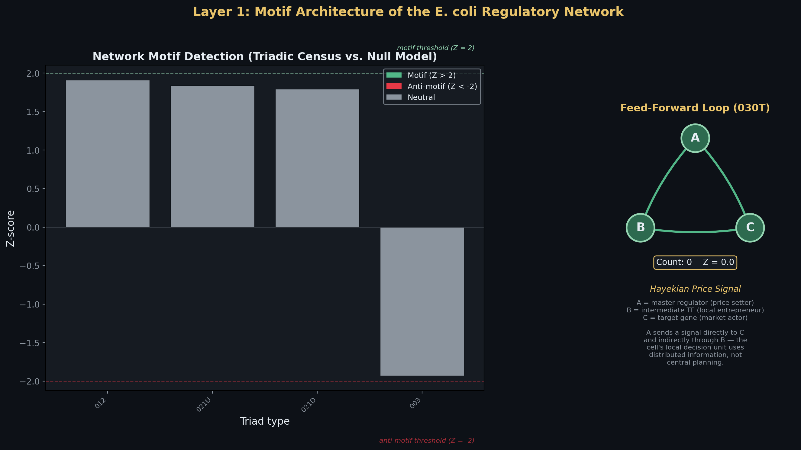
Fig 1. Feed-forward loops (030T) are massively over-represented in the E. coli GRN vs. 1,000 randomized networks — evolved coordination motifs that propagate local information without central command.
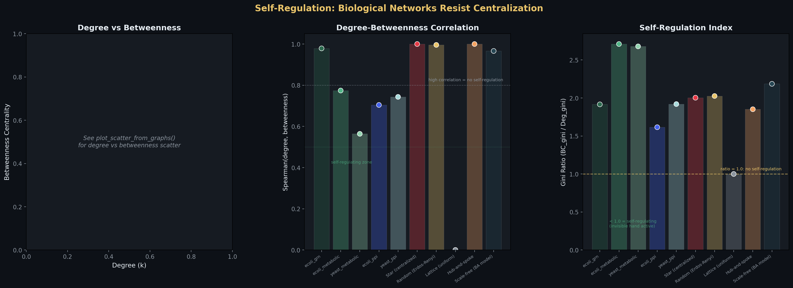
Fig 2. Degree vs. betweenness centrality: biological networks self-regulate against centralization. High degree does NOT guarantee high betweenness — the invisible hand in topology.
Every claim is falsifiable. If the E. coli GRN had a star topology, the planner would be right.
Gene regulatory, metabolic, and protein interaction networks in E. coli and S. cerevisiae exhibit scale-free degree distributions with no single controlling node.
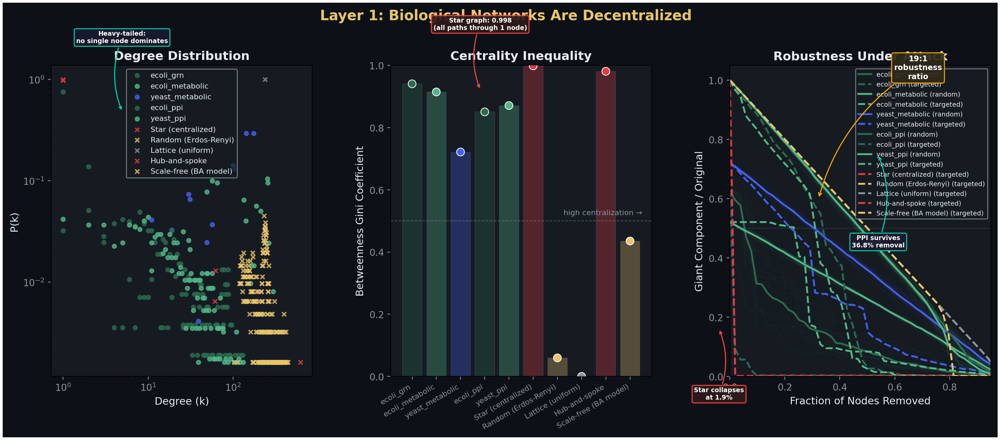
Fig 3. Degree distribution, robustness curves, and centrality comparison across biological vs. synthetic architectures.
Same genome, different output. PBMC single-cell RNA sequencing reveals 8 distinct cell types — no master cell assigned roles. Each cell differentiated in response to local signals. Division of labor emerged from individual cells reading local conditions and making local decisions.
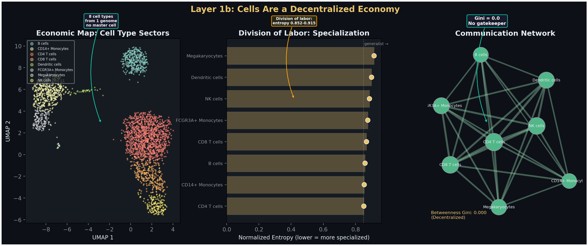
Fig 4. UMAP of PBMC cell types, Shannon entropy (specialization), and communication network topology — cells as specialized economic agents.
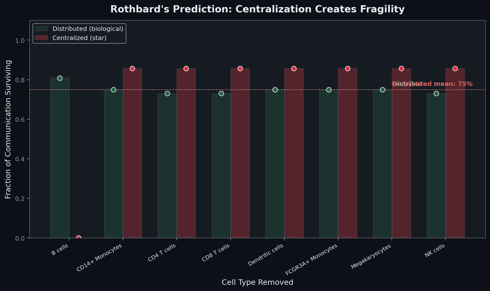
Fig 5. Distributed (green) vs. centralized (red) communication robustness after cell-type removal. 75% communication survival after any single removal.
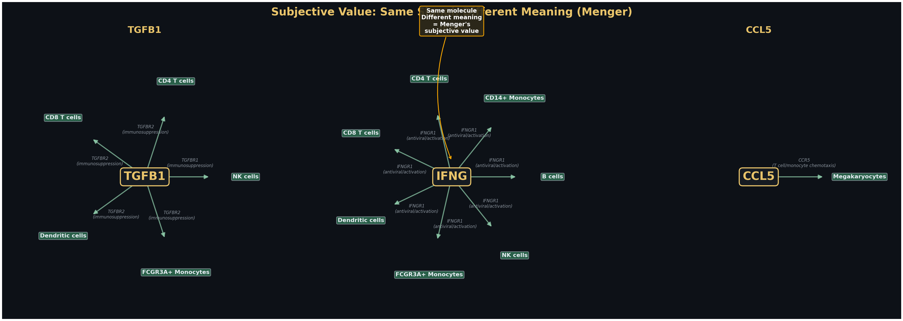
Fig 6. The same ligand is received differently by different cell types — Menger's subjective value at the molecular level. The value of a signal depends on who receives it.
13 metabolic pathway agents share a metabolite pool with no central allocator. Production rates oscillate early — the system discovering prices — then converge to stable equilibrium through local feedback alone. No planner needed. The invisible hand finds equilibrium.
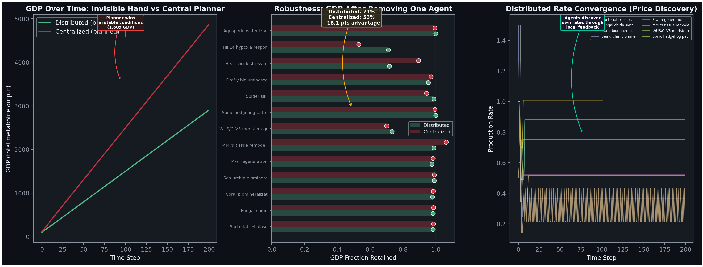
Fig 7. GDP over time, perturbation robustness, and production rate convergence — distributed vs. centralized allocation.
FBA using the genome-scale iML1515 model (2,712 reactions, 1,877 metabolites, 1,516 genes) is the omniscient planner — a linear program with perfect stoichiometric knowledge. It achieves 70% accuracy on real Keio knockout data. The 30% failure rate is structural: knowledge encoded in allosteric feedback, protein folding, and expression timing exists only in the local state of each molecular agent.
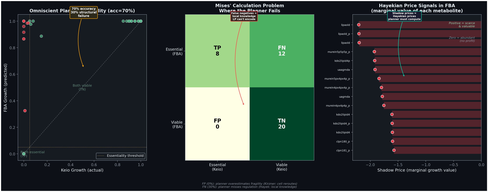
Fig 8. FBA vs. Keio knockout predictions, confusion matrix, and shadow prices — even the omniscient planner must compute prices to solve its optimization.
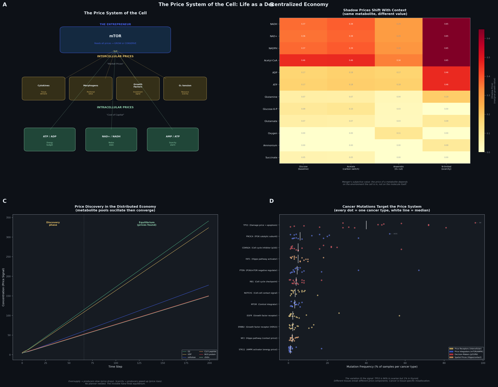
Fig 9. The Price System of the Cell — metabolite ratios as cost of capital, intercellular signals as market prices, mTOR as the entrepreneur. Cancer mutations target these price components (TCGA PanCancerAtlas, 10,967 samples).
Gene transferability between 8 organisms follows the patterns of voluntary exchange. Codon distance = trade friction. Each organism contributes unique comparative advantage. Coral exports biomineralization. Spider exports silk. Bacteria export cellulose. No organism does everything — Ricardian comparative advantage at the molecular level.
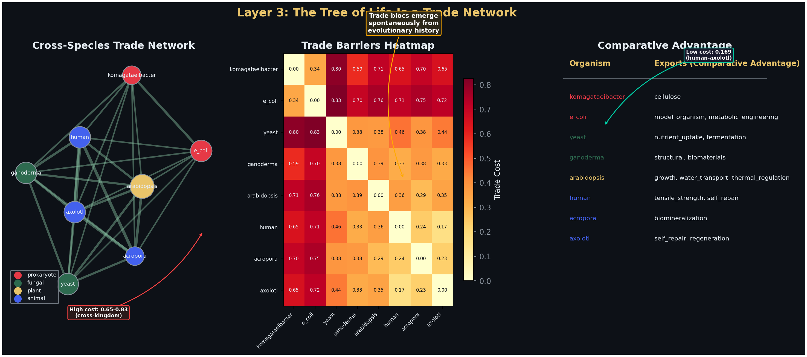
Fig 10. Cross-species trade network. Edge weight = codon compatibility. Trade blocs emerge spontaneously via Louvain community detection.
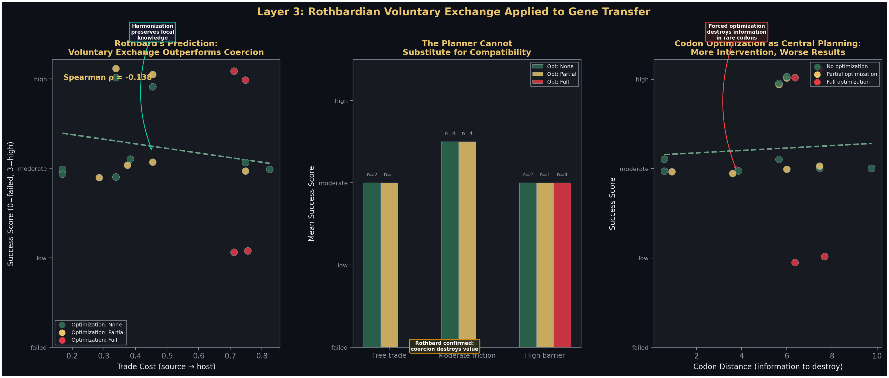
Fig 11. Trade cost vs. success: voluntary exchange (compatible organisms) works; forced exchange (high barriers) destroys biological information — Rothbard's argument that coercion destroys value.
For the practicing molecular biologist: Design distributed feedback architectures, not command hierarchies. Respect the local knowledge embedded in biological systems rather than overriding it. Build economies, not machines. The entrepreneur outperforms the central planner — in the cell, in the tissue, in the organism, and in the lab.
Hayek (1945) AER; Mises (1920); Menger (1871); Rothbard (1962); Kirzner (1973); Barabasi & Oltvai (2004) Nat Rev Genet; Kitano (2004) Nat Rev Genet; Salgado et al. (2013) NAR; Kanehisa & Goto (2000) NAR; Szklarczyk et al. (2023) NAR; Monk et al. (2017) Nat Biotech; Shen-Orr et al. (2002) Nat Genet